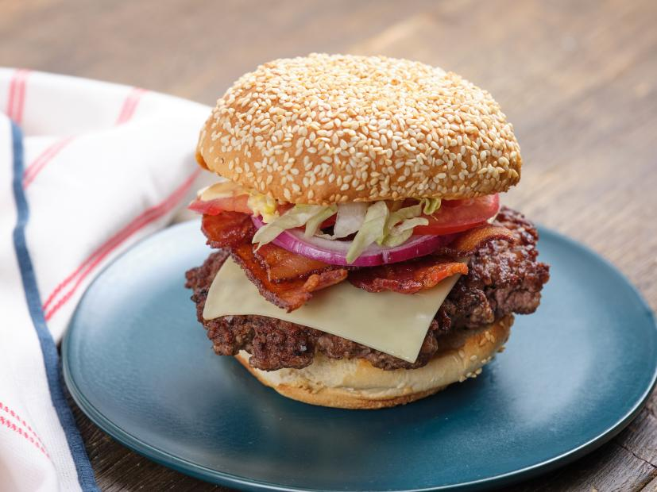

The Ultimate Bacon Cheeseburger
While we love a grilled burger, this one is out go-to for all seasons. Instead of making a typical patty, we smash the meat in a super-hot cast-iron pan to get crispy, ruffled edges. Once you smash your burgers this way, you'll never go back! We top them with all the fixings, including our perfectly balanced special sauce. It's what we consider an iconic burger.
- 1/4 cup mayonnaise
- 2 tablespoons ketchup
- 2 tablespoons yellow mustard
- 2 tablespoons pickle relish
- 1 tablespoon apple cider vinegar
- 8 slices thick-cut bacon
- 4 sesame seed hamburger buns, split
- 2 pounds ground beef (80-percent lean)
- kosher salt
- thin slices sharp white Cheddar
- 4 thin slices red onion
- 8 thin slices tomato
- 1/4 head iceberg lettuce, shredded
List of Ingredients:
- Preheat the oven to 400 degrees F.
- Combine the mayonnaise, ketchup, mustard, relish and vinegar in a bowl; set aside.
- Working in batches if necessary, add the bacon to a large cast-iron skillet over medium heat. Cook, flipping halfway through, until crisp and golden, about 10 minutes. Transfer the bacon to a nonstick backing sheet. Discard the bacon fat (or save for another use) and wipe the skillet clean but do not wash. Heat over medium heat until very hot, about 5 minutes.
- Add the buns split-side up to the baking sheet with the bacon and bake until the buns are toasted, about 5 minutes.
- Loosely form the beef into 4 balls. Add one ball of the beef to the skillet and press firmly to flatten with a large flat metal spatula for 10 seconds, then gently remove the spatula. Sprinkle the patty generously with salt; repeat with the remaining beef balls, cooking in batches if necessary. Let cook undisturbed, until well browned on the bottoms 2 to 3 minutes. Flip the patties, sprinkle with more salt and top each with a slice of Cheddar. Continue cooking until the cheese is melted around the edges and the bottoms are browned, about 2 more minutes.
- Spread the mayonnaise mixture on the bun tops. Serve the patties on the bottom buns topped with the bacon, onion, tomato and lettuce.
Directions: